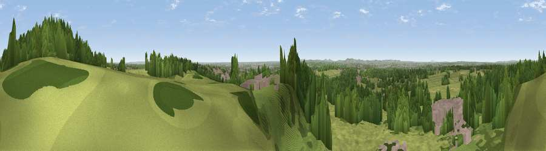

Viewpoint near Great Barr
#22157 in England · top 34% of its area beats it · near Great BarrThe view, rendered

A 360° render of this exact spot computed from the terrain model, tree cover and land cover — summer colours, afternoon light, calibrated against photographs of famous viewpoints. Real trees, hedges and buildings will differ in detail.
The panorama
Grey silhouette: terrain skyline in each direction (720 bearings, Earth curvature and refraction included). Dashed green: skyline with trees (+15 m) and buildings (+8 m) as obstacles. Blue strip: how far the ground is visible on each bearing.
Where the view opens
Wedge length = distance to the farthest visible ground on that bearing (vegetation-aware). Rings at 10, 25 and 50 km.
What fills the view
44% grassland · 43% woodland · 10% built-up · 2% cropland
Angular shares of the visible panorama (visual magnitude), not map area. Landscape diversity 0.45 (0–1 Shannon).
Key numbers
More beautiful places nearby
The staircase of upgrades: each row has a higher view potential than everything closer. Driving times are estimates from straight-line distance, calibrated against real road routing — check an actual route before setting out.
| Place | Direction | Drive | Score |
|---|---|---|---|
| Viewpoint near Great Barr | NNE · 1 km | ~2 min | 61.9 |
| Viewpoint near Streetly | NNE · 1 km | ~3 min | 69.5 |
| Viewpoint near Clent | SW · 20 km | ~34 min | 73.8 |
| Viewpoint near Clent | SW · 21 km | ~35 min | 74.3 |
| Knowle Hill | WSW · 39 km | ~59 min | 75.5 |
| Viewpoint near Abberley | SW · 42 km | ~61 min | 77.5 |
| Viewpoint near Abberley | SW · 42 km | ~62 min | 78.1 |
| Abberley Hill | SW · 43 km | ~62 min | 80.4 |
52.56742, -1.91402 · source: screening · position refined by local search. Computed location — check access rights before visiting.